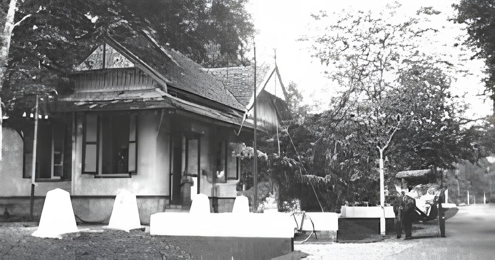

Sejarah
Nama dari Kerajaan Tamiang tersebut pada awalnya diambil dari sebuah kata "Tamiang" yang juga berasal dari kata "te-miyang". Nama tersebut diambil dari sebuah legenda yang berasal dari wilayah tersebut yang berarti tidak gatal-gatal atau kebal terhadap miang bambu. Hal tersebut juga berhubungan dengan cerita sejarah tentang Raja Tamiang yang bernama Pucook Sulooh. Ketika masih bayi, raja tersebut ditemui dalam rumpun bambu Betong atau betung (istilah Tamiang ” bulooh ”). Raja yang menemukannya ketika itu bernama Tamiang Pehok, ia kemudian mengambil dan membawa bayi tersebut. Setelah dewasa kemudian ia dinobatkan menjadi Raja Tamiang dengan gelar ” Pucook Sulooh Raja Te-Miyang “, yang artinya seorang raja yang ditemukan di rumpun rebong tetapi tidak kena gatal atau kebal dari gatal-gatal.
Sebelum Islam masuk ke Tamiang, wilayah ini pada umumnya masih dalam pengaruh Hindu-Budha kala itu. Hal ini ditandai dengan adanya penjelasan tentang Kerajaan Tamiang yang terdapat pada Prasasti Sriwijaya.[2] Pada Awal abad ke-14 sekelompok da'i atau disebut juga dengan pengkhotbah Islam dikirim ke Tamiang oleh Sultan Samudra Pasai. Raja yang berkuasa di Tamiang ketika itu beranama Po dinok. Raja tersebut tidak mendukung kedatangan kelompok pendakwah Islam tersebut masuk ke wilayahnya. Ia kemudian menyerang kelompok tersebut, tetapi kalah dan akhirnya meninggal. Setelah penaklukan tersebut maka terjadi proses islamisasi masyarakat Kerajaan Tamiang pra islam menjadi masuk kedalam ajaran agama Islam. Proses islamisasi ini berlangsung secara damai sehingga terpilihlah Raja Muda Sedia (1330-1352 M) sebagai raja pertama Kerajaan Islam Tamiang. Pada masa Raja Muda Sedia (1330- 1366 M) sistem pemerintahan Kerajaan Islam Tamiang adalah sistem pemerintahan berdasarkan pewarisan atau turun termurun. Struktur pemerintahan Kerajaan Islam Tamiang dipengaruhi oleh Samudera Pasai dan Aceh Darussalam. Bentuk peradaban yang dibangun oleh raja untuk Kerajaan Islam Tamiang bertujuan untuk memenuhi kepentingan rakyat Tamiang. Hal ini dibuktikan dengan pembangunan kekuatan militer dan pelayaran serta perdagangan yang menunjukkan bahwa kekuasaan para raja untuk tindakan yang mengarah kepada kemaslahatan rakyat Tamiang. Peradaban yang dihasilkan oleh Kerajaan Islam Tamiang tidak hanya di bidang militer dan perdagangan saja melainkan di bidang kebudayaan dan sarana ilmu pengetahuan seperti; meunasah, bahasa Tamiang, pakaian dan kesenian.
Kerajaan Tamiang pernah menjadi kerajaan terkenal yang mencapai puncak kejayaannya pada masa pemerintahan Raja Muda Sedia yang memerintah pada tahun 1330 -1366M. Pada saat itu wilayah kekuasaan kerajaan Tamiang meliputi kawasan Aceh bagian timur dengan batas-batas sebagai berikut: di sebelah utara berbatas dengan Sungai Raya atau Selat Malaka, di sebelah berbatasan dengan Besitang, Kabupaten Langkat, Sumatera Utara. Kemudian di sebelah timur juga berbatasan dengan Selat Malaka dan di sebelah barat berbatas dengan Gunung Segama (Gunung Bendahara/Wilhelmina Berte). Akhir masa pemerintahan Raja Muda Sedia diwarnai dengan cerita tentang serangan Kerajaan Majapahit terhadap Kerajaan Benua Tamiang. Setelah kondisi kerajaan kembali pulih, Muda Sedinu memerintah di sana dan memindahkan pusat pemerintahan ke Pagar Alam, di sekitar Simpang Jernih. Selanjutnya Muda Sedinu digantikan oleh Raja Po Malat (1369--1412).
Pada sekitaran tahun 1500-an Kerajaan Tamiang mengalami berbagai macam kemunduran. Kerajaan Tamiang tersebut mengalami kemunduran disebabkan oleh berbagai faktor. Pertama, serangan yang dilakukan oleh tentara Majapahit terhadap wilayah Tamiang. Kedua, wilayah kekuasaan kerajaan yang selalu berpindah-pindah. Ketiga, kelemahan para penguasa Kerajaan Islam Tamiang. Keempat, merosotnya ekonomi Kerajaan Islam Tamiang. Dengan terjadinya kejadian-kejadian tersebut maka hal tersebut membuat berakhirnya puncak kejayaan Kerajaan Islam Tamiang pada tahun 1558 M.
Industri Sawit
Aceh Tamiang dikenal sebagai pusat industri sawit yang penting di Provinsi Aceh. Dengan lahan yang subur dan iklim yang mendukung, perkebunan sawit menjadi salah satu sektor utama perekonomian wilayah ini.
Berbagai perusahaan sawit berskala besar hingga kecil beroperasi di Aceh Tamiang, mempekerjakan ribuan pekerja lokal dan menghasilkan produk minyak sawit mentah (CPO) dan turunannya yang diekspor ke seluruh dunia.
Selain industri sawit, Aceh Tamiang juga memiliki potensi di sektor perkebunan lainnya seperti karet dan kelapa. Pemerintah setempat terus berupaya untuk mengembangkan sektor ini dengan memperhatikan aspek keberlanjutan dan kelestarian lingkungan.
Wisata
Meskipun Aceh Tamiang dikenal sebagai pusat industri sawit, wilayah ini juga menawarkan beragam destinasi wisata alam yang menakjubkan dan budaya yang kaya. Berikut adalah beberapa tempat wisata yang wajib dikunjungi:
Agrowisata Sawit
Bagi Anda yang ingin mempelajari lebih lanjut tentang industri sawit, Anda dapat mengunjungi agrowisata sawit di Aceh Tamiang. Di sini, Anda dapat melihat langsung proses produksi minyak sawit mentah (CPO) dari penanaman hingga pengolahan.
Taman Nasional Gunung Leuser
Taman Nasional Gunung Leuser merupakan salah satu kawasan konservasi hutan tropis terbesar di dunia. Tempat ini menawarkan keindahan alam yang luar biasa, seperti air terjun, gua, dan keanekaragaman flora dan fauna yang menakjubkan.
Jelajahi Aceh Tamiang
Apa Kata Mereka?
"Aceh Tamiang adalah tempat yang luar biasa! Saya sangat terkesan dengan keindahan alamnya dan budaya yang kaya. Pasti akan berkunjung lagi."
Xavier
"Saya sangat menikmati liburan di Aceh Tamiang. Hamparan kebun sawit dan pegunungannya sungguh memukau. Terima kasih atas pengalaman yang tak terlupakan!"